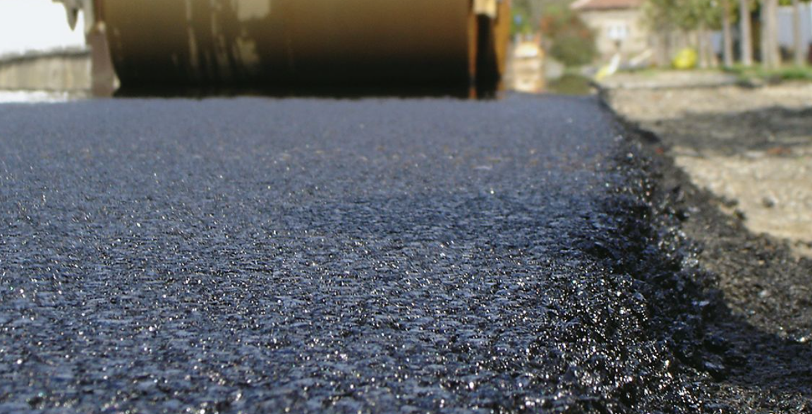

Utak - közlekedés a mai napokban
Míg a magyar úthálózat egész elfogadható Budapest környékén, az utak minőségi még itt is kérdéses...


A városok növekedésével a tömegközlekedés egyre fontosabbá válik. A buszok, vonatok, metrók és villamosok segítik az embereket napi úti céljuk elérésében. Minden közlekedési módnak megvannak az előnyei és hátrányai, melyek ismerete segíti a tudatos választást és a városi közlekedés jobb megértését.

A közlekedésközpontú várostervezés során a város szerkezetét és működését nagyrészt az határozza meg, hogyan lehet a lehető leghatékonyabban mozogni benne legyen szó autós, tömegközlekedési, kerékpáros vagy gyalogos közlekedésről.